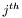
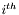
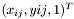
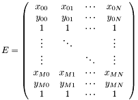
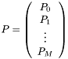
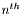
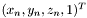
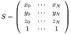

The library consists of three main classes: ShapeMatrix, MotionMatrix and MeasurementMatrix.
A MeasurementMatrix can be thought of a container of pixel correspondences (i.e. pixels in different images that correspond to the same 3D point). Each column of this matrix corresponds to a single 3D point for which we have image points, and each block of 3 rows corresponds to a single viewpoint. So, suppose there are N 3D points seen from M views. If the  3D point is seen from the  image as pixel , then the MeasurementMatrix would look like:

A MotionMatrix is just the camera matrices from each view placed one on top of the other:

A ShapeMatrix contains the reconstructed 3D coordinates of the scene, one coordinate per column, so if the  3D point is  then the corresponding shape matrix is:

To construct a measurement matrix, use the load, add_correspondence or pixel methods of MeasurementMatrix. Once constructed, the motion matrix can be calculated by constructing an empty MotionMatrix and using the svd_solve method. If extra accuracy is required, follow this with a call to the bundle_adjust method to find the least squares minimum reprojection error.
Given a measurement matrix and a motion matrix, the shape matrix can easily be calculated by constructing an empty ShapeMatrix and calling the solve method.
1.5.6